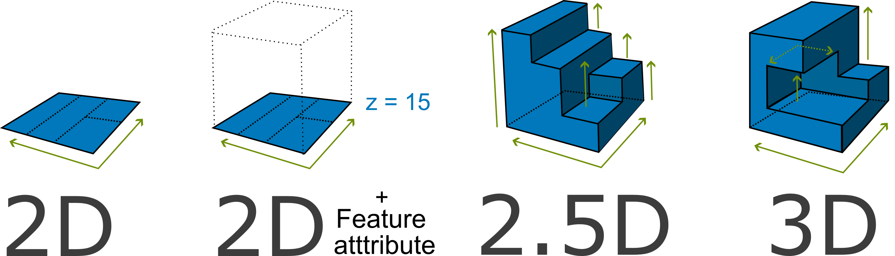
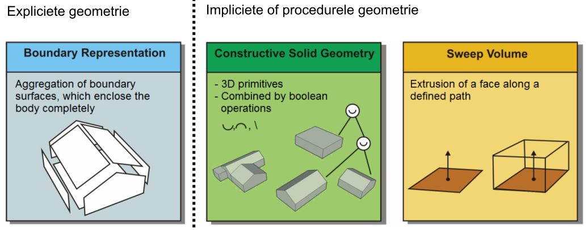

Dit rapport beschrijft een vervolgonderzoek naar de optimale 3D geostandaarden voor Nederland, voortbouwend op de Wegwijzer 3D standaarden van Geonovum. Het onderzoek richt zich op het bepalen van standaarden die nodig zijn voor de volledige keten van 3D data-inwinning, opslag, integratie van BIM-modellen, en uitwisseling van 3D geografische informatie met gerichte toepassingen in visualisatie en analyse. Met een focus op twee objecttypen – gebouwen en kunstwerken – onderzoekt het rapport welke nationale en internationale standaarden het best aansluiten bij verschillende onderdelen van deze keten, waardoor interoperabiliteit van landelijke 3D bestanden kan worden bereikt.
Status van dit document
Dit is een werkversie die op elk moment kan worden gewijzigd, verwijderd of vervangen door andere documenten. Het is geen stabiel document.
1. Introductie
Dit document beschrijft het vervolgonderzoek op de door Geonovum gemaakte Wegwijzer 3D standaarden [ww3d], uit maart 2025, voor de uitwisseling van 3D data. In deze wegwijzer is een aantal vervolgstappen beschreven. Eén van die stappen was om een vervolgonderzoek uit te voeren naar standaarden voor de 3D geometrie van fysieke en virtuele objecten conform NEN 3610.
Dit rapport beschrijft het vervolgonderzoek, waarvan het doel was om te onderzoeken welke geostandaarden nu precies nodig zijn om de basisregistraties in 3D in te winnen, op te slaan, 3D BIM modellen in bestaande topografie in te kunnen passen, en 3D data uit te wisselen en te bekijken. In de Wegwijzer 3D standaarden is al een inventarisatie van 3D standaarden opgenomen. Er blijken verschillende 3D standaarden te zijn, die aansluiten bij verschillende onderdelen van de keten van inwinning naar gebruik. Deze 3D standaarden moeten per ketenonderdeel benoemd worden als geldende standaard in Nederland. In sommige gevallen zijn er meerdere standaarden kandidaat voor één onderdeel van de keten. Een belangrijk doel is daarom ook om te komen tot onderbouwde keuzes als er meer dan één mogelijkheid is.
In het vervolgonderzoek stonden vijf onderzoeksvragen centraal:
Voor welke soorten objecten en daarmee samenhangende datasets zou deze 3D standaard moeten gelden?;
Welke nationale en internationale standaarden vormen de basis voor de eisen aan een 3D object in een basisregistratie en welke aanvullende afspraken maken we op het gebied van semantiek, geometrie, CRS, maar met name inwinning, kwaliteit, detailniveau en afbakening van 3D objecten, rekening houdend met de aansluiting op BIM standaarden?;
Welke afspraken zijn nodig om geo-informatie naar BIM, en BIM informatie naar GEO te kunnen krijgen? (richtlijn geo-referentie in BIM, IFC-profiel, etc.);
In welke vorm(en) is implementatieondersteuning nodig voor succesvolle implementatie van de 3D standaard? (handreikingen, software, etc.);
Wordt de 3D standaard wettelijk verplicht of komt deze op de pas-toe-leg-uit lijst?
Vraag 1, 2, en 3 worden in dit rapport behandeld. Vraag 4 en 5 komen in een later stadium aan bod.
1.1 Werkdoel
Onze opdracht was:
"enerzijds om te kijken wat de geostandaarden zijn die benodigd zijn om de basisregistraties in 3D in te winnen, op te slaan en uit te wisselen en anderzijds om te kijken welke geostandaard nodig is om 3D BIM modellen in te kunnen passen in bestaande topografie voor ontwerp en planningsvraagstukken."
Om het vervolgonderzoek goed te kunnen uitvoeren, was het nodig het doel van de nieuwe 3D standaard (of set standaarden) gedetailleerder te beschrijven. Dit noemen we ons werkdoel. Als werkdoel hanteerden we:
Het doel van de 3D standaard is om te zorgen voor interoperabiliteit van landelijke 3D bestanden, zodat 3D viewers en digitale tweelingen hieruit op gestandaardiseerde wijze kunnen putten voor zowel visualisaties van 3D modellen als het gebruik van 3D modellen voor analyses en berekeningen.
De volgende illustratie van de VNG helpt ons het werk in beeld te krijgen:
In deze keten spelen op de volgende plekken standaarden een rol:
Bij inwinnen. Het gaat dan om ruwe data die als basis van 3D modellen dienen, zoals LiDAR data, luchtfoto's, oblieke foto's, maar ook BIM modellen (geen ruwe data maar wel brondata).
de Keuzehulp geeft voor de ruwe data al handvaten. Aan GeoBIM standaarden wordt momenteel gewerkt in parallele trajecten.
Onze eerste taak: afspreken welke standaard(en) we in Nederland gebruiken voor ruwe data, zodat bv gemeenten deze standaarden in hun bestek kunnen opnemen voor inwinopdrachten.
Onze tweede taak: de afspraken voor BIM + Geo vastleggen.
Bij registreren. Het gaat dan om uitwisseling en opslag van 3D vectordata.
Uit de Keuzehulp 3D standaarden blijkt dat CityGML hier de beste kandidaat is.
Onze taak: deze keuze verder uitwerken met afspraken voor Nederland.
Bij gebruik, ontsluiten. Het gaat dan om 3D visualisatie en om exporteren.
Voor 3D visualisatie hebben we twee goedgekeurde internationale standaarden, 3D Tiles en i3s.
Onze taak: hier een beargumenteerde keuze in maken zodat we voor Nederland één standaard afspreken.
De standaard voor exporteren kan dezelfde zijn als voor uitwisseling en opslag (het vorige punt)
1.2 Scope
Onze opdracht had een brede focus:
"de 3D geometrie van fysieke en virtuele objecten conform NEN 3610"
Onze eerste stap is geweest om na te denken over de soorten objecten waarvoor de overstap naar volledige 3D registratie de meeste meerwaarde zou hebben. Al snel besloten we om eerst te focussen op reële (fysieke) objecten. Deze beperkte focus is nodig om in beperkte tijd de eerste stappen naar een 3D standaard te kunnen zetten.
Wat betreft soorten objecten en datasets waar de 3D standaard voor gaat gelden, richten we onze focus in eerste instantie op twee objecttypen: gebouwen en kunstwerken. Deze objecttypen zijn het vaakst relevant om als 3D object te modelleren.
In Hoofdstuk 2 is deze keuze verder uitgewerkt.
2. 3D objecten
Onderzoeksvraag: Voor welke soorten objecten en daarmee samenhangende datasets zou deze standaard moeten gelden?
We kijken naar twee use cases die vooral focussen op de SOLL situatie en antwoord geven op de vraag wat is er nodig aan standaarden om naar die SOLL situatie te komen.
De use cases zijn:
DTaaS: Digital Twin as a Service. In DTaaS komen diverse use cases aan de orde zoals hittestress en overstroming van steden, waarbij een 3D stadsmodel nodig is om simulaties te kunnen doen. DTaaS maakt gebruik van 3D geo-objecten maar schrijft geen standaard voor. Voor een vergroot gebruik van Digital Twins is een 3D standaard aan te bevelen. Door Digital Twin als usecase te gebruiken versterken we ook de relatie tussen het ZoN Datafundament en het ZoN Digital Twin programma.
Informatiemodel Geluid. Geluid is bij uitstek een fenomeen dat beïnvloed wordt door de 3D ruimte en men heeft 3D objecten nodig om binnen de geluidsmodellen te kunnen bepalen welk geluid hoe hard ergens aankomt, gegeven de locatie van de geluidsbron en de fysieke objecten die het geluid onderweg tegenkomt.
2.1 Wat is 3D
Dit rapport beschrijft 3D-objecten. In de praktijk zijn er verschillende interpretaties van het concept 3D. Om in dit rapport eenduidig hiermee om te gaan hanteert dit rapport voor 3D onderstaande begrippen. Deze zijn in lijn met de internationale standaard voor geometrie [ISO19107].
Geometrische dimensie:
Dit is een nummer dat de orthogonale richtingen beschrijft waar een geometrie zich naar uitstrekt. De geometrische dimensie kijkt lokaal naar het object, het beschrijft de hoeveelheid onafhankelijke richtingen die er zijn zonder het object te verlaten. Een punt heeft een geometrische dimensie van 0. Een rechte lijn een lengte, maar geen breedte of hoogte. De geometrische dimensie van een lijn is 1. Een vlak heeft een geometrische dimensie van 2. Een kubus heeft een geometrische dimensie van 3.
Coördinaat dimensie: Dit is het aantal onafhankelijke numerieke componenten dat nodig is om een positie in een GIS-representatie te beschrijven.Deze dimensie beschrijft de hoeveelheid onafhankelijke richtingen die de coördinaten hebben waarmee geometrie is opgebouwd. De Simple Feature Access [SFA] definieert coördinaat dimensie als de hoeveelheid metingen of assen die nodig zijn om een positie in een coördinaatsysteem te duiden. Veel gebruikt zijn de dimensies x, y en z. Maar ook de tijdsdimensie (t) en maat (m) dimensie worden vaak gebruikt. Andere parametrische dimensies als Kosten, Temperatuur, Druk, Windsnelheid kunnen use-case afhankelijk worden toegevoegd. In theorie kan men, door coördinaten uit te breiden, oneindig veel dimensies bereiken.
coördinaten beschrijven verschillende dimensies. De x,y en z coördinaat beschrijven de ruimtelijke dimensie, terwijl een temporele coördinaat een aparte temporele dimensie beschrijft die geen onderdeel is van de ruimtelijke dimensie. Parametrische coördinaten beschrijven weer een andere dimensie.
Ruimtelijke dimensie:
Deze dimensie beschrijft de hoeveelheid onafhankelijke richtingen in de "echte ruimte", die we visueel of fysiek kunnen voorstellen. Dit gaat om de x, y en z dimensie. Dimensies als tijd, maat, druk, temperatuur etc. tellen niet mee. Ruimtelijke coördinaten bestaan niet los. Ze zijn altijd gedefinieerd binnen een coordinate reference system (CRS). Ruimtelijke coördinaten dienen consistent te zijn met een CRS beschreven door [ISO19111].
Temporele dimensie
Temporele coördinaten beschrijven een fenomeen in de tijdsruimte. Dit maakt het mogelijk om bijvoorbeeld geldigheid, volgorde en duur te definiëren. Temporele coördinaten moeten horen bij een Time Reference System (TRS) volgens[ISO19108].
Parametrische dimensie
Parametrische coördinaten beschrijven de positionering van een fenomeen in een aanvullende dimensie die niet ruimtelijk en niet temporeel van aard is. Parametrische coördinaten zijn geen attributen, maar worden ondersteund door extra assen, naast de ruimtelijke en temporele assen. Parametrische coördinaten dienen consistent te zijn met het uitbreidingsmechanisme beschreven door [ISO 19111].
Een combinatie van 3D ruimtelijke dimensie met 1D temporele dimensie wordt ook wel 4D of ruimtelijk-temporeel (spatio-temporal) genoemd.
Tabel met voorbeelden die het verschil tussen geometrische, coördinaat- en ruimtelijke, temporele en parametrische dimensies illustreren
Geometrie
Geometrische dimensie
Coördinaat-dimensie
Ruimtelijke dimensie
Temporele dimensie
Parametrische dimensie
Uitleg
Punt (x,y)
0D
2D
2D
0D
0D
Dit punt strekt zich in 0 richtingen, is beschreven door 2 coördinaten en ligt op een 2D vlak of assenstelsel.
Lijn (x,y)
1D
2D
2D
0D
0D
Deze lijn strekt zich in 1 richting, is beschreven door 2 coördinaten en ligt op een 2D vlak of assenstelsel.
Vlak (x,y,z)
2D
3D
3D
0D
0D
Dit vlak strekt zich in 2 richtingen, is beschreven door 3 coördinaten en ligt in een 3D ruimte.
Kubus (x,y,z)
3D
3D
3D
0D
0D
Deze kubus strekt zich in 3 richtingen, is beschreven door 3 coördinaten en ligt in een 3D ruimte.
Lijn met tijd en maat (x,y,z,t,m)
1D
5D
3D
1D
1D
Deze lijn strekt zich in 1 richting en is beschreven door 5 coördinaten. Het punt ligt in een 3D ruimte, heeft een tijd en een meting.
Punt met een maat (x,y,z,m)
0D
4D
3D
0D
1D
Dit punt strekt zich in 0 richtingen, is beschreven door 4 coördinaten. Het punt ligt in een 3D ruimte en heeft een meting
In dit document focussen wij ons op 3D-objecten waarbij 3D staat voor de ruimtelijke dimensie waarin objecten met een 0D, 1D, 2D, en 3D geometrische dimensie kunnen bestaan. De ruimtelijke coördinaten dienen consistent te zijn met een CRS beschreven door [ISO19111]. De CRS'en waar in deze standaard naar gekeken wordt zijn:
RDNAP (EPSG:7415)
ETRS89
WGS 84
Engineered CRS
Deze zijn beschreven in de Handreiking Gebruik coördinaatreferentiesystemen bij uitwisseling en visualisatie van geo-informatie [HRCRS].
Voor het temporele coördinatenstelsel wordt gebruik gemaakt van de wereldwijd afgesproken UTC (Coordinated Universal Time). [ISO8601] voorziet in regels voor de notatie van het tijdscoördinaat.
2.2 Geometrie in 2D, 2D met hoogte attribuut, 2,5D en 3D
Geo-objecten worden in registraties meestal door middel van een geometrie gerepresenteerd. Dit kan, zoals hierboven uitgelegd, in een 2D of een 3D ruimtelijke dimensie gebeuren. In de praktijk zien we ook enkele vormen die tussen 2D en 3D in zitten.
0D, 1D en 2D-geometrieën in 2D ruimtelijke dimensie kennen geen hoogte. Naast het definieren van geometrie in een 3D-ruimtelijke dimensie bestaan er andere mogelijkheden om 3D-informatie toe te voegen. Men kan hoogte duiden door één of meerdere attributen als "hoogte" aan een feature in een 2D ruimtelijke dimensie te binden. Met deze informatie is het mogelijk om 3D-geometrie in een 3D-ruimtelijke dimensie te construeren.
Dit principe wordt bijvoorbeeld gebruik in de 3D-Basisvoorziening en de 3D-Basisvoorziening productbeschrijving. Hier kan men de BGT geleverd krijgen, waarbij 2D-vlak geometrie met een aantal attributen als "maaiveldhoogte"en "dakhoogte" in 2D kan downloaden. Dit kan een werkwijze zijn voor het creëren van 3D geometrie van gebouwen op verschillende detailniveaus oftewel levels of detail (LOD0 tot LOD1.2), zie Level of Detail framework voor gebouwen.Het hoogte attribuut kan in een 2D-systeem gebruikt worden om volume te meten of om weer 3D van te maken. Ook het project Totaal Driedimensionaal heeft hier een werkwijze voor. Zie de Totaal Driedimensionaal toolkit.
In de praktijk kent men ook 2,5D geometrie. Dit zijn punten, lijnen of vlakken in een 3D-ruimtelijke dimensie. Coördinaten bestaan uit een x,y en z waarde. Er wordt niet over 3D, maar over 2,5D gesproken omdat bij elk x,y-locatie er maximaal één z-waarde beschikbaar is. Dat betekent dat 2D geometrien zich in een 3D ruimte (x,y,z) bevinden maar dat de geometriën zichzelf of elkaar niet mogen overlappen in de horizontale projectie. De definitie hiervan staat beschreven in geometrie in model en GML. Verticale vlakken zijn hierin ook niet mogelijk.
Tenslotte bestaat echte 3D geometrie. Dit zijn punten, lijnen, vlakken en volumes. Volume eenheden oftewel ‘solids’ zijn onderdeel van de mogelijke geometrietypen. Bij elke x,y-locatie zijn er meerdere z-waarden mogelijk.
Onderstaand beeld geeft de verschillende opties weer. De verticale vlakken in 2.5D zijn iets naar achter hellend zodat er geen dubbele z-waarde ontstaat.

Figuur 2
Verschil tussen de ruimtelijke dimensie 2D, 2D met hooogte attribuut, 2,5D en 3D
2.3 Geometrie in 3D
Er zijn verschillende benaderingen voor het definieren van (3D) geometrie. In hoofdlijnen komt dit neer op de volgende groepen:

Figuur 3
Drie verschillende benaderingen soorten geometrie in IFC
(bron: [AGCITYGMLIFC])
GIS ondersteunt meestal alleen expliciete geometrie, zoals meshes en boundary representations (BRep). IFC ondersteunt zowel expliciete als impliciete geometrie. Naast expliciete meshes en BReps ondersteunt IFC ook geometrie zoals sweeps en constructive solid geometry (CSG). Deze impliciete geometrie maakt het mogelijk om zeer complexe vormen op te slaan in een relatief licht formaat met behulp van wiskundige vergelijkingen. verwijzing naar onderzoek naar geometrie
2.4 Topologie in 3D
Het definieren van geometrieën in een 3D ruimtelijke dimensie introduceert nieuwe topologische mogelijkheden die in een 2D ruimtelijke dimensie niet bestaan (zie On 3D Topological Relationships). De betekenis van een topologische relatie verandert niet tussen 2D en 3D: je kunt van bijvoorbeeld lijnen, vlakken of volumes stellen, dat ze elkaar "raken", "overlappen" of "disjoint" zijn.
Het resultaat van een topologische bevraging hangt echter wel af van de dimensie van de ruimte waarin de relatie wordt geëvalueerd. Dat wil zeggen, het antwoord op de vraag of twee volumes elkaar raken, of wat de afstand tussen beide is, kan verschillen afhankelijk van de ruimtelijke dimensie waarin de vraag beantwoord wordt.
2.5 Topologie in 3D
Het definieren van geometrieën in een 3D ruimtelijke dimensie introduceert nieuwe topologische mogelijkheden die in een 2D ruimtelijke dimensie niet bestaan (zie [3DTOPREL]). De betekenis van een topologische relatie verandert niet tussen 2D en 3D: je kunt van bijvoorbeeld lijnen, vlakken of volumes stellen, dat ze elkaar "raken", "overlappen" of "disjoint" zijn.
Het resultaat van een topologische bevraging hangt echter wel af van de dimensie van de ruimte waarin de relatie wordt geëvalueerd. Dat wil zeggen, het antwoord op de vraag of twee volumes elkaar raken, of wat de afstand tussen beide is, kan verschillen afhankelijk van de ruimtelijke dimensie waarin de vraag beantwoord wordt.
Binnen de Simple Features Access standaard worden relaties van geometrieën in een 3D-ruimtelijke dimensie standaard geëvalueerd in een 2D-projectie. Voor echte 3D-geometrieën in een 3D-ruimtelijke dimensie zijn Query2D en Query3D verschillende operaties. Bij menging van 2D- en 3D-geometrieën moet inbedding of projectie expliciet gebeuren. Zie het document Zie bureauonderzoek naar geometrie en topologie in 3D.
Hieruit volgt dat het nodig is, om een set topologische regels voor specifieke 3D-situaties te definieren. Hiervoor is een issue aangemaakt in de NEN3610 GitHub repository [ref toevoegen].
3. Inventarisatie 3D standaarden
Onderzoeksvraag: Welke internationale en nationale standaarden vormen de basis voor de eisen aan een 3D object in een basisregistratie? Welke aanvullende afspraken moeten we maken op het gebied van semantiek, geometrie en coördinatenstelsel, inclusief randvoorwaarden zoals inwinning, kwaliteit, detailniveau en afbakening van 3D objecten, hierbij rekening houdend met de aansluiting op geldende standaarden.
In 2024 heeft Geonovum een inventarisatie gedaan van 3D standaarden. Dit heeft de Wegwijzer 3D standaarden opgeleverd.
In onderstaande tabel beschrijven we:
welke nieuwe inzichten er zijn ten opzichte van de inventarisatie van 2024
welke wijzigingen aanbevolen worden voor de Wegwijzer 3D standaarden
naam
beschrijving
actie
LAZ 1.4
LAZ is een gecomprimeerde variant van LIDAR Aerial Survey (LAS).Een LAS bestand is bedoeld om (met name) LIDAR gegevens op te slaan, bestaand uit point clouds. De laatste ontwikkeling is dat LAZ, de gecomprimeerde variant, nu een kandidaat community standaard is bij OGC. De public comment periode is goed doorlopen. LAS was al een OGC standaard.
LAZ staat al in de handreiking. Aan de tekst toevoegen dat LAZ naar verwachting binnenkort een OGC community standaard wordt.
Een OGC community standaard voor het uitwisselen van 3D scenes voor real-time visuele simulatie van 3D terrein objecten en bewegende objecten, zowel op de grond als in de lucht.
Deze standaard uit 2020 is niet als een in Nederland toegepaste standaard naar voren gekomen uit de inventarisatie. Vooralsnog niet opnemen in de Wegwijzer.
GeoSPARQL is een uitbreiding van de SPARQL standaard voor het bevragen van linked data. De uitbreiding betreft het uitdrukken en ruimtelijk bevragen van geo-data als Linked Data. De huidige versie bevat geen 3D ondersteuning; OGC werkt aan v1.3 met 3D. Er is een whitepaper over 3D requirements.
Zolang 3D nog geen goedgekeurd onderdeel van GeoSPARQL is, deze standaard nog niet opnemen in de Wegwijzer; heroverwegen als v1.3 een goedgekeurde standaard geworden is.
Een voorstel om support voor Z en M dimensies toe te voegen aan het veel gebruikte WKB opslagformaat voor geometrie. Het voorstel komt voort uit werk aan OGC GeoSPARQL 1.3, want daarin wordt WKB gebruikt en daarvor is 3D ondersteuning nodig. EWKB is al geïmplementeerd in PostGIS, GEOS, GDAL, JTS Topology suite. Het voorstel is nog in een vroeg stadium van het OGC goedkeuringsproces op moment van opname in dit overzicht.
Te vroeg voor opname in Wegwijzer; het is bovendien een serialisatieformaat dat in bovenliggende standaarden wordt gebruikt, bv in 3D GeoSPARQL, en dat in databases wordt geïmplementeerd, maar geen uitwisselformaat op zich. Daarom is dit geen kandidaat voor opname in de Wegwijzer.
Een OGC community standaard voor JSON-gebaseerde uitwisseling van rasterbestanden. Kan 3D aan, mogelijk interessant voor 3D grid objecten
Deze standaard is niet naar voren gekomen in de inventarisatie en wordt blijkbaar niet breed gebruikt in NL. Wel een formaat om in de gaten te houden, maar niet om nu in de Wegwijzer op te nemen.
JSON-FG is een in mei 2026 gepubliceerde, nieuwe OGC standaard. Het definieert een JSON‑gebaseerde indeling voor het uitwisselen van ruimtelijke features en geometrieën, inclusief een gemeenschappelijk model, datatype‑definities en de basis‑JSON‑structuur die GIS‑applicaties interoperabel kunnen gebruiken. Het is een meer lichtgewichte vervanging voor GML. Het bevat ondersteuning voor 3D geometrie.
In 2024, toen de Wegwijzer werd gepubliceerd, was dit nog geen goedgekeurde standaard. Het advies is om JSON-FG toe te voegen aan de Wegwijzer. Dit formaat is een goede optie om objecten met 3D vectorgeometrie uit te wisselen in APIs. Wel moet in de Wegwijzer goed duidelijk worden gemaakt wanneer je CityJSON gebruikt, en wanneer JSON-FG.
OpenUSD (Universal Scene Description) is een raamwerk dat fungeert als een universele taal voor het opbouwen van en samenwerken in complexe 3D-werelden. Binnen OpenUSD wordt 3D-geometrie via de UsdGeom-bibliotheek opgeslagen als meshes. Naast geometrie bevat de standaard functies voor materialen, belichting, fysica-simulaties en een lagensysteem voor gelijktijdige samenwerking. OpenUSD kan een verbindende factor zijn om openBIM-data (IFC) en geografische data (OGC) samen te brengen in een Digital Twin. OpenUSD is belangrijk in de transitie naar IFC 5/ IFC X, waarbij buildingSMART USD-concepten omarmt om de nieuwe BIM-standaard fundamenteel lichter, sneller te renderen en beter compatibel met moderne software te maken.
OpenUSD is ontstaan bij Pixar en is inmiddels open en breed industrieel gedragen. Het wordt actief ontwikkeld en gecoördineerd via de Alliance for OpenUSD. Partijen als NVIDIA, Apple, Autodesk en Adobe gebruiken het. In BIM en GEO is het opkomend, als visualisatie- en integratielaag naast IFC en OGC-standaarden.
Noot: Overweeg toevoeging JSON-FG aan de Wegwijzer
4. Afspraken voor Geo-BIM
Onderzoeksvraag: Welke afspraken zijn nodig specifiek voor GeoBIM? Onderzoek het grensvlak tussen geo-informatie en BIM en de mate van overlap daarin. Wat zijn de benodigde afspraken om geo-informatie naar BIM, en BIM informatie naar geo te kunnen krijgen? (richtlijn geo-referentie in BIM, IFC-profiel, etc.)
De behoefte aan data delen tussen de 3D-Geo- en 3D-BIM-wereld lijkt vanzelfsprekend, omdat beide werelden op het niveau van een bouwwerk dezelfde objecten lijken te definiëren. Maar voor zinvolle integratie is het goed om te beseffen dat beide werelden een andere modelleer-benadering hebben.
Als we bijvoorbeeld kijken naar een huis kan men dat in de BIM wereld zeer gedetailleerd beschrijven aan de hand van de elementen waaruit het bouwwerk bestaat. Voor geo-applicaties is het echter voldoende om gebouwen te modelleren als entiteiten met 3D vlakken (muren) als geometrische begrenzingen, en eventueel verblijfsruimten hierin. Een groter detailniveau is zelfs vaak onwenselijk. Een BIM-model daarentegen bevat een groot aantal (vaak honderden of duizenden) elementen die tezamen een bouwwerk vormen. Deze elementen, hoe klein ook, zijn volumetrisch beschreven, denk bijvoorbeeld aan een deurklink, een kitvoeg of kozijn.
Een ander verschil heeft te maken met de geometrie van objecten. Geometrie wordt in het geo-domein vaak ingewonnen (inmeten). In het BIM-domein wordt geometrie vaak ontworpen op basis van de kennis van ontwerpers en modelleurs en op basis van parametrische primitieven in relatie tot andere objecten. Zolang men in een specifieke softwareomgeving blijft, ondersteunt deze parametrische beschrijving vele mogelijke vormen. Bovendien zijn objecten en hun relaties automatisch valide en consistent te houden bij wijzigingen. Dit is de kracht van BIM-software. Een BIM-model wordt in de werkelijkheid geplaatst door maatvoering op locatie (uitzetten). Voor het gebruik van BIM-objecten in een geo-omgeving moeten de parametrische beschrijvingen worden omgezet naar expliciete geometrieën, d.w.z. geometrische elementen gedefinieerd als een schil van coördinaten (de zogenaamde boundary representatie). Dit maakt conversie naar andere formaten waar de expliciete geometrie nodig is moeilijk. De benodigde ‘discretisation’ is bovendien gevoelig voor topologische fouten. Een bijkomend probleem is de uitgebreide variabiliteit in BIM-standaard IFC. De variatie in IFC-modellen maakt automatische transformaties nog moeilijker.
Een laatste fundamenteel verschil is het gebruik van een lokaal coördinatenstelsel (engineered CRS) in BIM versus het gebruik van een geografisch coördinatenstelsel in Geo. Dit kan worden opgelost door de BIMs te georefereren. Dit is in de praktijk nog niet triviaal. Je gaat immers van een cartesisch, orthogonaal coördinatenstelsel waarbij de afstand tussen twee coördinaatlijnen constant is over naar coördinaten die de vorming van de aarde representeren. Vooral voor bouwwerken die een groot gebied omvatten kan dit een ongewenste vertekening geven. Momenteel is dit technisch op te lossen, maar het vraagt in de praktijk veel uitzoekwerk en is bovendien niet als standaard workflow beschikbaar binnen de mainstream software omgevingen. De uitdaging hier is het ontwikkelen van breed gedragen, gestandaardiseerde oplossingen met duidelijke handreikingen zodat deze oplossingen ook beschikbaar komen voor klein-tot-middelgrote projecten waar niet altijd de benodigde expertise beschikbaar is.
4.1 Geo-BIM Bouwblokken
Om de bovengenoemde obstakels en belemmeringen weg te nemen moeten we werken aan oplossingen. Deze oplossingen vallen onder de hieronder opgenoemde en met elkaar samenhangende bouwblokken. Het gaat om activiteiten die in nauwe samenwerking met het werkveld zullen worden uitgevoerd ten einde oplossingen met draagvlak te realiseren:
Identificeren van GeoBIM uitdagingen en borging in praktijk
Het brengen van BIM-informatie naar Geo
Het brengen van Geo-informatie naar BIM
Standaardiseren van georefereren in BIM-modellen
Geo-based BIM en BIM-based Geo standaarden
Afsprakenstelsel voor Geo-BIM data integratie
4.1.1 Identificeren van GeoBIM uitdagingen in proces van Plan tot Realisatie en borging in praktijkcases
Een belangrijke stap in de Geo-BIM oplossingen is te verkennen hoe een ontwikkelproces van plan tot realisatie aanzienlijk versneld kan worden door slim gebruik te maken van de integratie tussen Geo- en BIM: Wat zijn de processtappen waarbij Geo- en BIM-integratie een rol speelt? Wat zijn de databehoeftes in deze stappen? Wat zijn de huidige belemmeringen? Waar bevinden zich de potenties om met betere integratie het proces van plan tot realisatie te versnellen?
Er zijn beslissingen die in het ontwikkelproces moeten worden gemaak. Het afwegen van een aantal cruciale omgevingscriteria met betrokkenheid van bepaalde stakeholders staat hierbij vanaf het begin (schets) tot eind (realisatie) centraal: zijn er voldoende bossen; is er voldoende water; hoe zit het met de kwaliteit van de bodem. Het kunnen gebruiken van 2D en 3D geometrie van BIM met 2D en 3D geometrie van geodata is randvoorwaardelijk voor het digitaal ondersteund beantwoorden van deze vragen.
Voor zinvol gebruik van 3D data, die gecreëerd zijn in een BIM-omgeving, in geo-applicaties moeten relevante Geo-concepten worden gegeneraliseerd uit de BIM-data. Het gaat dan bijvoorbeeld om de buitenkant van een gebouw, verdiepingen, kamers, footprint van een brug etc. Meestal gaat het met name om nieuwe BIM ontwerpen waar men in Geo gebruik van wil maken. Tegelijkertijd zal worden gekeken naar scans van bestaande bouwwerken die worden omgezet naar een BIM-representatie.
Door afrondingsfouten, modelleerfouten of bouwkundige principes (ventilatie, dilatatie) bevinden zich vaak smalle ruimten tussen de elementen van een bouwwerk waardoor het samenvoegen van de elementen alleen niet altijd het meest bruikbare resultaat geeft. Er zijn al verschillende open source initiatieven om BIM (in open-BIM-formaat IFC) automatisch om te zetten naar geo-concepten gedefinieerd in CityGML/CityJSON die hiermee om weten te gaan. Hierbij worden individuele volumes op een slimme manier samengevoegd en versneden om tot een gesloten buitenkant te komen. De kwaliteit van de input BIM is daarbij bepalend voor de output. Een uitdaging is ook om goed om te gaan met het hierboven genoemde verschil van parametrisch beschreven geometrieën versus expliciete geometrieën. Tenslotte is een randvoorwaarde voor het ontwikkelen van succesvolle transformaties het oplossen van de bestaande variëteit in IFC modellen.
Een werkgroep onder leiding van Geonovum werkt aan kennis voor deze GeoBIM uitdaging. Deze kennis is verzameld in een praktijkrichtlijn BIM naar Geo brengen .
4.1.3 Het brengen van geo-informatie naar BIM
Voor zinvol gebruik van 3D data, geometrie en attributen gecreërd in een geo-omgeving in BIM-applicaties moeten relevante BIM-concepten worden gegeneraliseerd uit geo-data, zoals de binnenkant van een gebouw, muren, ramen, daken, etc. Het gaat hier met name om bestaande bouwwerken.
Een toekomstige werkgroep kan onderzoeken hoe geodata beter toegankelijk kan worden voor de BIM-community en zal hiervoor tools ontwikkelen. Deze werkgroep is nog niet gestart.
4.1.4 Standaardiseren van georefereren BIM-modellen
In BIM werkt men vaak in een lokaal coördinatenstelsel. In open BIM, IFC, kun je geografische coördinaten van een referentiepunt (met beperkte precisie) opslaan bij het object IfcSite in WGS84 (EPSG: 4326) of meer specifiek via het toevoegen van een IfcCartesianPoint aan IfcSite. Op deze manier kan het model in de werkelijkheid worden gelokaliseerd, wat nodig is voor de GeoBIM integratie. In IFC4 is het ook mogelijk meer complexe referentie-informatie op te slaan, zoals CRS, projectie en parameters. Deze versie wordt steeds meer ondersteund. In de praktijk bevatten veel IFC-modellen slechts globale referentie-informatie of alleen een lokaal coördinatensysteem.
Een werkgroep heeft methodes en tools ontwikkeld en beschreven waarmee men kan werken om het georefereren van BIM-modellen te standaardiseren. Zo zijn BIM-beoefenaars die de benodigde achtergrond missen ontzorgd van deze specialistische taak. De kennis en handreikingen zijn verzameld in de praktijkrichtlijn georefereren [dit is een werkversie, uiteindelijk moet verwezen worden naar een versie op docs].
4.1.5 Geo-based BIM en BIM-based Geo standaarden
BIM-modellen kunnen beter worden verwerkt in geo-omgevingen als bij de opbouw van BIM-modellen rekening wordt gehouden met bepaalde wensen, en hetzelfde geldt andersom (zoals data eisen die de wederzijdse transformaties beter mogelijk maken).
Een voorbeeld van een geo-wens voor BIM is het gebruik van de niet procedurele expliciete 3D geometrie. Deze kan gemakkelijker vertaald worden naar de geo-toepassing. In de openBIM wereld zijn Model View Definitions gemaakt. Dit zijn subsets van het IFC-schema, speciaal bedoeld voor specifieke use-cases die dit af kunnen dwingen.
Niet alleen geometrie, maar ook entiteiten en attributen kunnen in een BIM-omgeving opgesteld worden om de data dichter bij de geo-omgeving te krijgen. Hoewel IFC een semantisch rijke standaard is, wordt dit niet altijd ten volle benut. In open-BIM (IFC) kan men het IfcBuildingElementProxy element gebruiken. Dit concept is bedoeld voor klassen die niet worden ondersteund in IFC. Maar in praktijk blijkt dit element gebruikt voor elementen waarvoor wel een geschikte (specifieke) IFC-klasse beschikbaar is, zoals IfcBeam, IfcBuildingElementPart, IfcCovering, IfcCurtainWall, IfcDoor, IfcFooting, IfcRailing, IfcRamp, IfcRampFlight, IfcRoof, IfcSlab, IfcStair, IfcStairFlight, IfcWall, IfcWindow. Door het veelvuldig gebruik van de generieke klasse gaat in de praktijk veel semantiek verloren die niet kan worden gebruikt in downstream toepassingen of transformatie naar andere domeinen (zoals geo).
Een toekomstige werkgroep kan onderzoeken hoe men Geo-based BIM en BIM-based Geo kan maken en welke tooling, producten en processen hierbij nodig zijn. Deze werkgroep is nog niet gestart.
4.1.6 Afsprakenstelsel voor Geo-BIM data integratie
Naast de bovenstaande technische uitdagingen om 3D uit geo en BIM technisch beter op elkaar aan te laten sluiten, zijn er niet-technische afspraken nodig om BIM- en geo-data zonder restricties en beperkingen te gebruiken in domein- en organisatie-overstijgende workflows.
Een toekomstige werkgroep zal inventariseren welke afspraken er nodig zijn om Geo- en BIM-data zonder belemmeringen te kunnen uitwisselen en zal werken aan een afsprakenstelsel om dit mogelijk te maken. Het gaat daarbij om bijvoorbeeld afspraken over de te gebruiken standaarden en richtlijnen; verantwoordelijkheid; aansprakelijkheid (bij bewerking van 3D); synchroniseren van BIM- en Geo-data workflows; en vraagstukken rond copyright.
Om 3D BIM te gebruiken voor inwinning van 3D geodata dienen oplossingen, methodes en inzichten op bovenstaande onderwerpen beschikbaar te zijn.
A. Objecttypen
Deze bijlage laat zien welke objecttypen betrokken zijn bij dit onderzoek.
Uitgaande van NEN3610:2022, zie figuur hieronder. De figuur geeft van deze NEN versie aan welke reele en virtuele objecttypen er gedefinieerd zijn.
In het geval van dit onderzoek zal de focus liggen op de reele objecttypen, specifiek op die onder hoofdtype Constructie. Daaronder vallen de subobjecttypen Gebouw en Kunstwerk.
Figuur....: overzicht van objecttypen uit NEN3610:2022
In tabelvorm:
Tabel met reele objecttypen uit NEN3610:22 die betrokken zijn bij dit onderzoek
GeoObject
VirtueleRuimte
ReeelObject
Bodem
Oppervlaktewater
Begroeiing
Constructie
Gebouw
Verharding
Kunstwerk
Leiding
Als we deze objecttypen mappen op het IMBGT dan ontstaat het volgende beeld. Het hoofdobjecttype Constructie in NEN:22 komt grotendeels overeen met het abstracte hoofdobjecttype Bouwwerk in BGT. Hieronder vallen ook de kunstwerken zoals tunnels en overbruggingen.